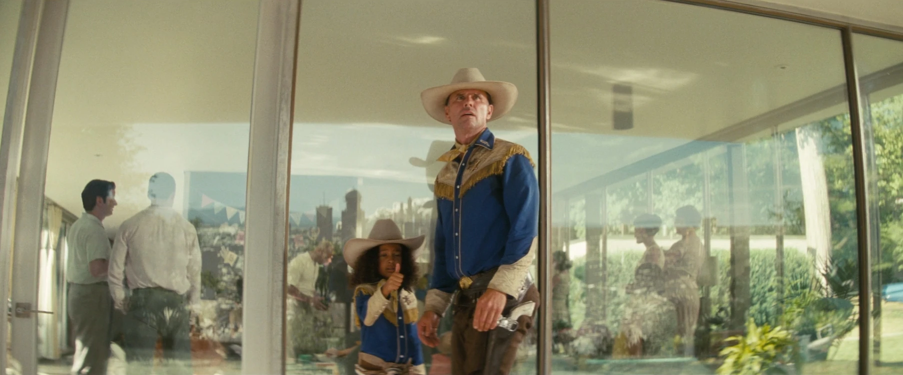

スペンサー邸
TVシリーズ ロケーション
LOCATION DATA

The Spencer residence{{Ref|(Note)}} is a location {{In|FOTV}}. It was the home of Bob and Roy prior to the Great War.
Background
{{Section|FOTV}}In the TV series
The End
{{Section|FOTV}}Notes
{{Note|(Note)}} This is a descriptive name; the location is unnamed in the TV series.Appearances
The Spencer residence appears only {{in|FOTV}} episode "The End."Behind the scenes
The scene at the Spencer family's house was filmed at Briarcliff Manor in Westchester County, New York.Gallery
References
Meta {{References|group=Meta}}Category:Fallout TV series locations
Impression
（準備中）
（準備中）